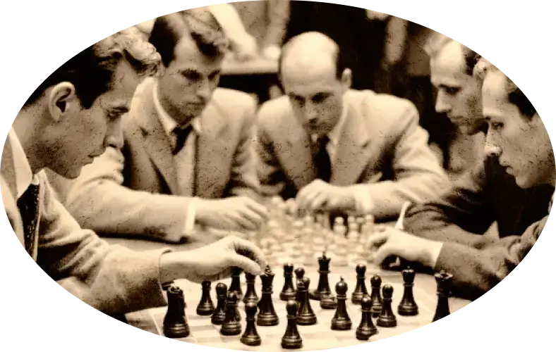
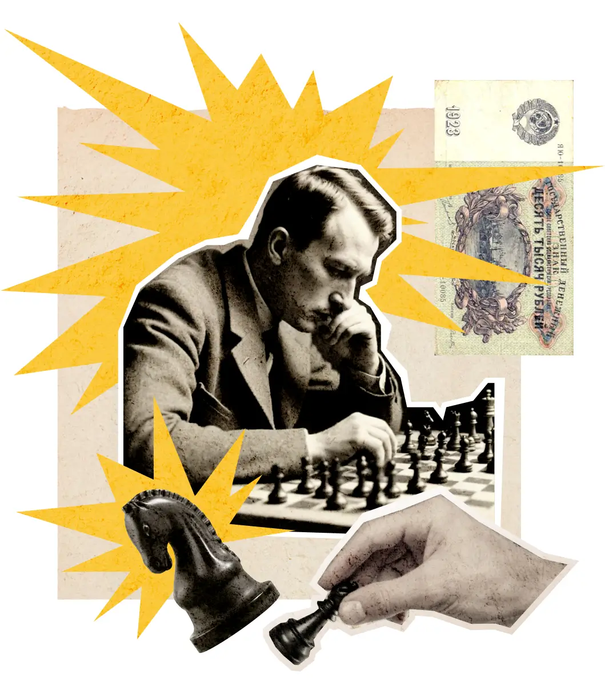
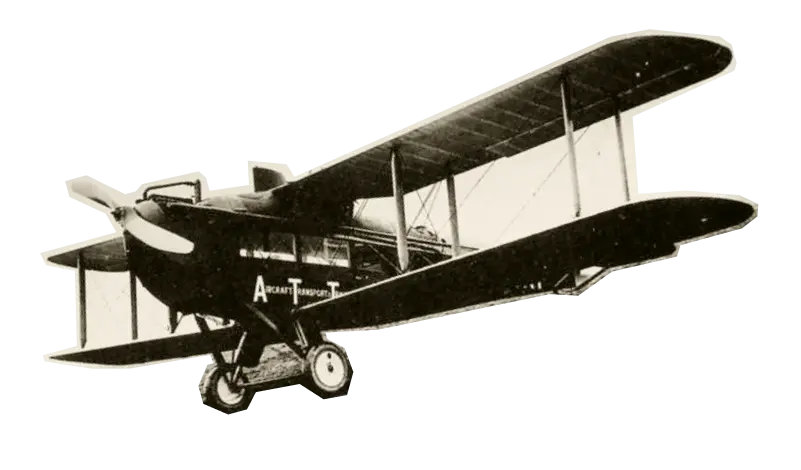

Превратите уездный город в столицу земного шара
Оплатите взнос на телеграммы для организации Международного васюкинского турнира по шахматам
Дело помощи утопающим — дело рук самих утопающих! Шахматы двигают вперед не только культуру, но и экономику! Лед тронулся, господа присяжные заседатели! Дело помощи утопающим — дело рук самих утопающих! Шахматы двигают вперед не только культуру, но и экономику! Лед тронулся, господа присяжные заседатели!
Чтобы поддержать Международный васюкинский турнир посетите лекцию на тему: «Плодотворная дебютная идея»

и Сеанс одновременной игры в шахматы на 160 досках гроссмейстера О. Бендера
Место проведения:
Клуб «Картонажник»
Дата и время мероприятия:
22 июня 1927 г. в 18:00
Стоимость входных билетов:
20 коп.
Плата за игру:
50 коп.
Взнос на телеграммы:
100 руб. 21 руб. 16 коп.
По всем вопросам обращаться в администрацию к К. Михельсону
Этапы преображения
Васюков
Будущие источники обогащения васюкинцев

- Строительство железнодорожной магистрали Москва-ВасюкиОткрытие фешенебельной гостиницы «Проходная пешка» и других небоскрёбов
- Поднятие сельского хозяйства в радиусе на тысячу километров: производство овощей, фруктов, икры, шоколадных конфет
- Строительство дворца для турнираРазмещение гаражей для гостевого автотранспорта
- Постройка сверхмощной радиостанции для передачи всему миру сенсационных результатов
- Создание аэропорта «Большие Васюки» с регулярным отправлением почтовых самолётов и дирижаблей во все концы света, включая Лос-Анжелос и Мельбурн
Дело помощи утопающим — дело рук самих утопающих! Шахматы двигают вперед не только культуру, но и экономику! Лед тронулся, господа присяжные заседатели! Дело помощи утопающим — дело рук самих утопающих! Шахматы двигают вперед не только культуру, но и экономику! Лед тронулся, господа присяжные заседатели!